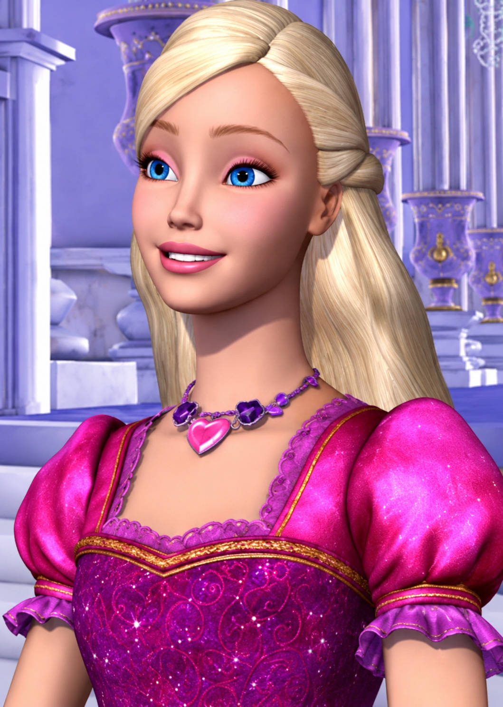

Liana
About
Liana is one of the two main heroes of the story (played by Barbie). She is kind, hopeful, and always ready to help others. Her big dream is to make music, and she believes in following it. She is the one who insists on helping Melody and never gives up on her best friend Alexa.
Liana is the role Barbie plays in the story she tells her sister. She lives in a cottage with her best friend Alexa, loves music, and dreams of a bigger life.
In the movie
After Liana and Alexa find Melody trapped in a magic mirror, they set out to restore the Diamond Castle before Lydia can take it. Liana’s necklace helps protect her from Lydia’s flute spell. At the end, the muses name her a princess of music.
Relationships
- Alexa: Her best friend and partner on the quest
- Melody: The muse she helps free from the mirror
- Jeremy: One of the twin musicians; he falls in love with her
- Lydia: The witch who tries to stop her
Fun facts
- In the real world, Liana is played by Barbie, and Alexa by Teresa.
- The story is told by Barbie to her little sister Stacie.